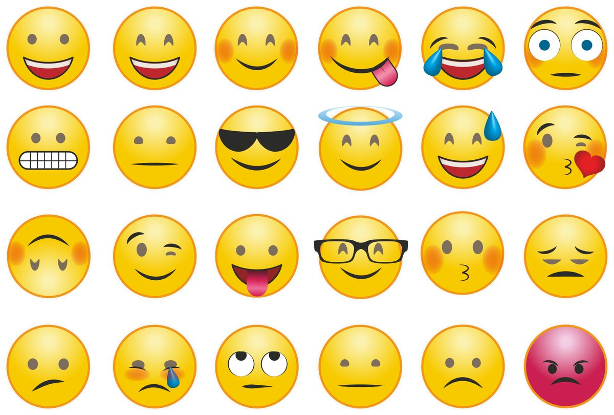

Простыми словами, эмодзи — это маленькие картинки, которые передают чувства пользователя во время переписки.
Эмодзи могут изображать, например, лица и погоду, транспортные средства и здания, еду и напитки, животных и растения, a также различные эмоции, состояния или действия.
Эмодзи как часть современной коммуникации